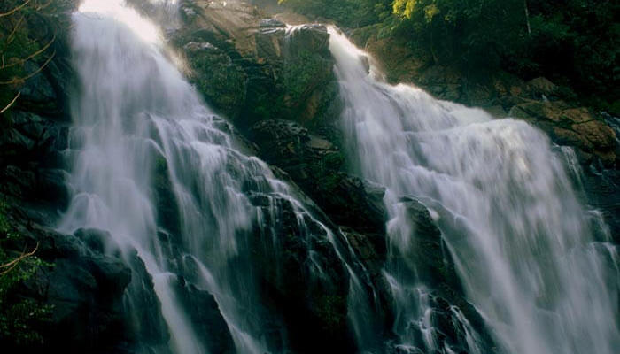
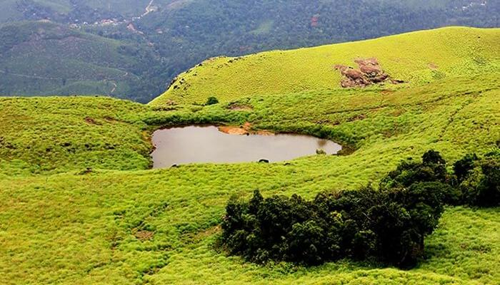
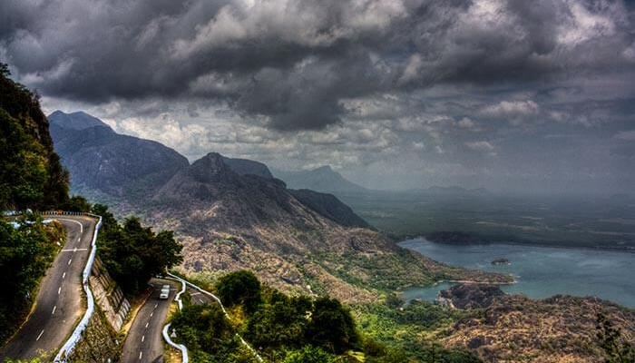

Wayanad is a district in the north-eastern part of God’s own country, Kerala. The place is situated on the southern tip of the Deccan Plateau, glorified by the Western Ghats with lofty ridges and clear lakes. The dense forests, lush green jungles, Wayanad tourist places and deep valleys are a must for any traveler. The setting seems just like those seemingly enticing landscapes that you have once seen in your fantasy. It is one of those cities in Kerala where sightseeing is just not enough. Get a hang of soothing Ayurvedic massage when in Wayanad and pull up your pants to attempt the most amazing treks.
Top Places To Visit In Wayanad
Meenmutty Waterfalls: For Scenic Beauty
Meenmutty derives its name from ‘Meen’ that means fish and ‘Muty’ that means blocked which means blocking the fishes. One of the most splendid Wayanad tourist places, this is amongst the best waterfalls in Kerala. It is located on the Ooty road at a height of 300 meters and, if in Kalpetta then this Wayanad destination is just 29 kilometers. If you are looking for the best waterfalls in Kerala then this should not be missed from your travel list. Location: Kallar Meenmutty Falls Road, Kallar, Kerala 695551 How To Reach: The falls are situated at a distance of 45 kilometers from Trivandrum which can be reached by a cab ride. Stay Options: The Meenmutty Heights Best Eat Outs: Kanakakkunnu Palace, Sri Saravana Bhavan and Blooming Bay
Chembra Peak: A Heart Shaped Lake

The Chembra peak is the highest peak in Wayanad and is located at a height of 2100 meters above the sea level. It is the best tourist place for nature lovers to adore its beauty and offers bewildering treks for adventurous souls. The peak is visible from almost all parts of Wayanad and the major attraction is the natural heart-shaped lake atop the hill. You can take a glimpse of Kozhikode, Nilgiris and Malappuram districts from here. This unique lake makes Chembra Peak one of the best tourist places in Wayanad. Location: Chembra, Kerala How To Reach: The nearest railway station is in Kozhikode, which is situated 79 km away from the peak. Trekking Charges: INR 500 for 10 members and INR 1000 for international tourists Stay Options: Blue Ginger Wayanad Resorts, Rain Country Resorts and Coffea Aroma Resort
Ghat View Point: Enjoy The Sunset

The adventurous spot in Wayanad is around 700 meters above sea level. Ghati viewpoint is nested at Lakkidi which has 9 hairpin curves within 16 kilometers. It gives an eyeshot of great steep, misty mountains and a glance of Arabian Sea. You can enjoy the sunset at this famous Wayanad sightseeing in the evening with your beloved. Location: Kozhikode-Mysore-Kollegal Highway, Lakkidi, Kerala 673576 How To Reach: After reaching Wayanad, hire a taxi and reach the viewpoint easily within a few hours. Stay Options: Upavan Resort, Orchid Holiday Resort and Lakkidi Village Resort Best Eat Outs: Coffee Groove Restaurant, White House and Shine Restaurant